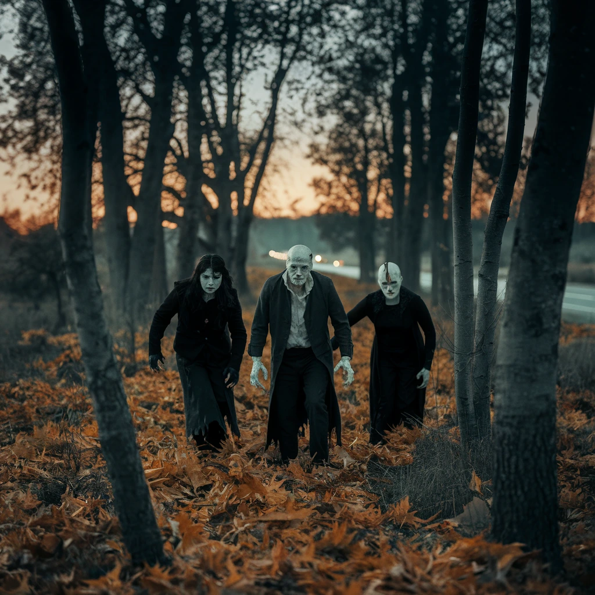

The people from the path of misery have come and changed the signs, because misery loves company. So you are moving towards a happy place. But perhaps that makes you miserable, because you went for the misery instead of the happiness? What do you want to do now?
Run back to the beginning.
Keep walking!